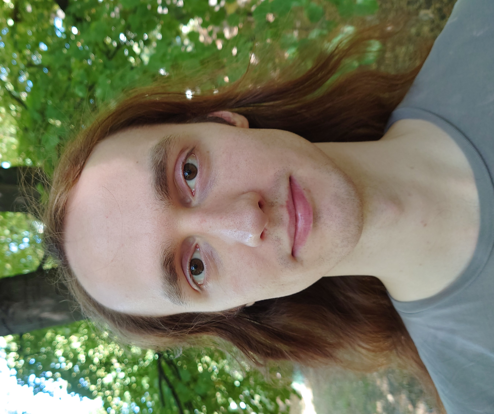

<html>
<head>
<title>
Mischa Elkner
</title>
</head>
</html>



<body>
<h1> Mischa Elkner </h1>

<p>Welcome to my website! I am a PhD student in the <a href =  https://hausel.pages.ist.ac.at/>Hausel Group</a> at the Institute of Science and Technology Austria. My e-mail address is mischa[dot]elkner[at]ista[dot]ac[dot]at. </p>

<p>Before starting my PhD, I studied mathematics at the University of Vienna. There, my BSc thesis was supervised by <a href = https://www.mat.univie.ac.at/~cap>Andreas Cap</a> and my MSc thesis by <a href = https://shantanudave.com>Shantanu Dave</a>.</p>

<p>I am interested in Lie theory and its interplay with algebraic and differential geometry. My PhD project is in geometric representation theory, with a focus on natural representation-theoretic symmetries. Using the recently introduced <a href = https://arxiv.org/abs/2311.02711>big algebras</a>, I am studying such symmetries geometrically. Concretely, this involves working with affine Grassmannians, in particular their real forms, and equivariant cohomology.</p>

<p> My other mathematical interests include combinatorial representation theory, algebraic topology, and &#8212; less seriously &#8212; replacing the name <i>Kähler manifold</i> with <i>Dreifaltigkeit</i>. </p>

<h2> Publications </h2>
<li> <em>Automorphisms of medium algebras and quasi-anisotropic real affine Grassmannians</a></em> (2026, preprint)
  <br>[<a href = "Automorphisms_of_medium_algebras_and_quasi_anisotropic_real_affine_Grassmannians_arXiv.pdf">pdf</a>], 
  [<a href = "https://arxiv.org/abs/2610.18170">arXiv</a>]  
<li> <em>On involutions of minuscule Kirillov algebras induced by real structures</a></em> (2026)
  <br>Transformation Groups.
  <br>[<a href = "https://link.springer.com/article/10.1007/s00031-026-09958-y">journal</a>], 
  [<a href = "https://arxiv.org/abs/2411.16270">arXiv</a>]
<li> My <a href = "MSc thesis.pdf"> master's thesis </a> (2022) was in noncommutative geometry in the sense of Connes. I filled in details for the computation of cyclic cohomology for noncommutative tori, following Ryszard Nest. </li> 

</body>
